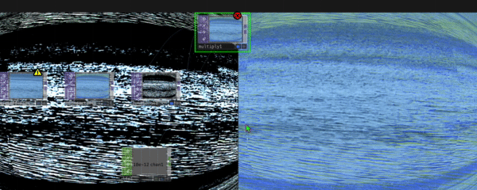
[TouchDesigner / stream]
water
A Lake Harriet inspired visual study using water texture, live processing, and performance capture as a soft signal field.
[minneapolis.mn] booting portfolio...
Moving image, creative coding, music, printmaking, and live visual systems.
root@xidist:~$ run visual_memory.sh --sound --screen --hands
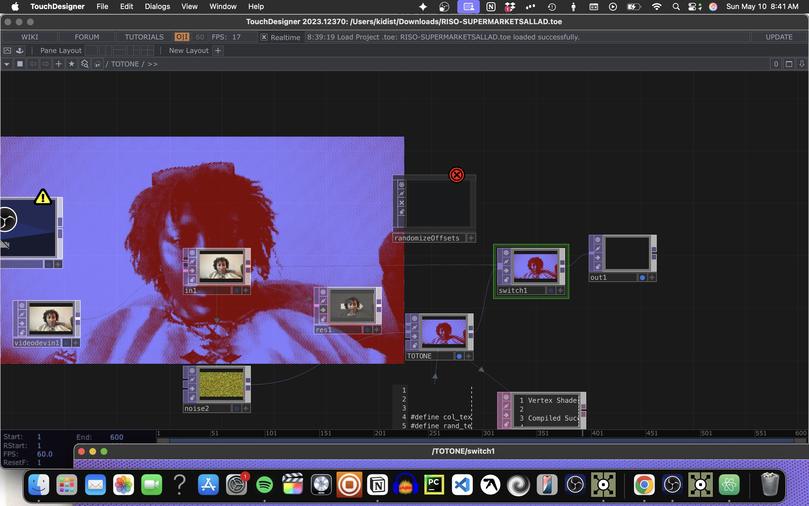
Artist statement
I am a Minneapolis based creative coder, musician, and moving image artist. My work combines guitar, live visual processing, webcam footage, screen recordings, creative coding, digital distortion, and analog printmaking. I build Black digital interiors through saturated color, layered screens, feedback, handmade abstraction, and spiritual noise.
Selected work

[TouchDesigner / stream]
A Lake Harriet inspired visual study using water texture, live processing, and performance capture as a soft signal field.

[TouchDesigner]
A glitchy texture experiment that drifted away from literal film grain and into a heavier study of edge, luminance, and dirty motion.
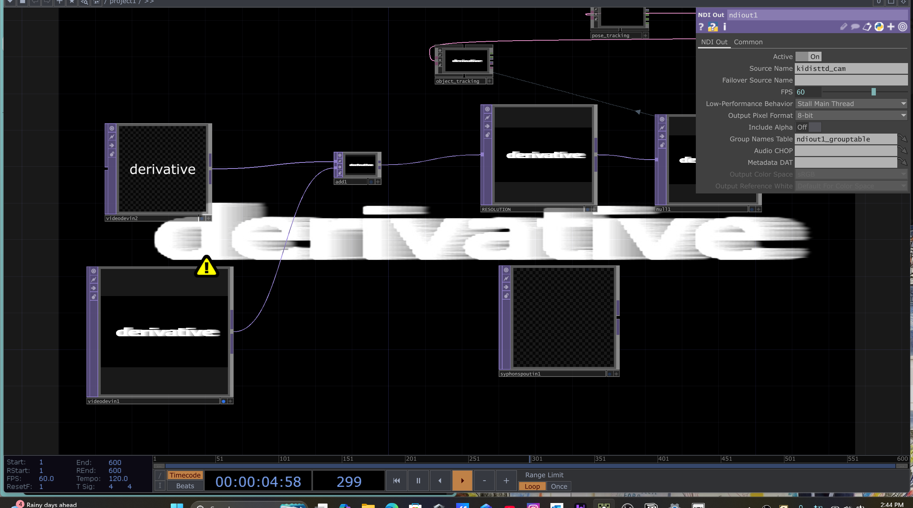
[MediaPipe / webcam]
Hand and pose tracking routed into TouchDesigner, exploring the body as a controller for color, feedback, and live composition.
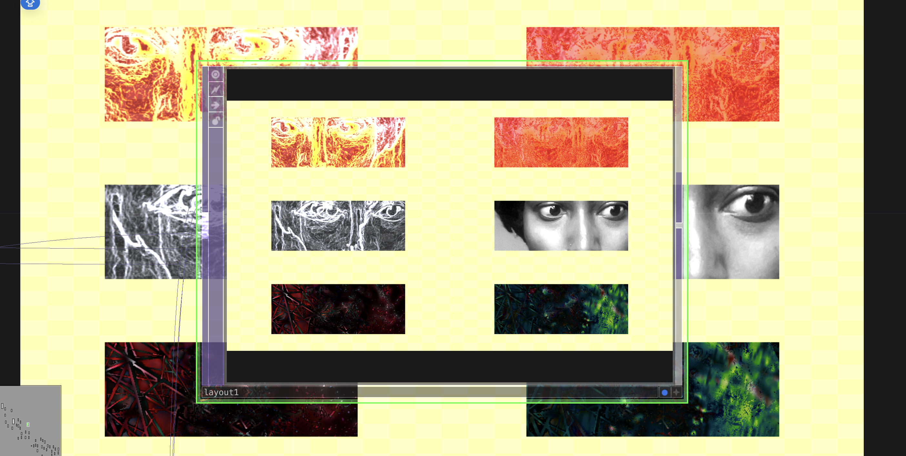
[system study]
Network studies, interface sketches, and repeatable TouchDesigner structures for faster live visual building.
Analog layer mounted
Through a scholarship supported class at Haystack, I studied introductory printmaking and lithography. I cut paper forms by hand, translated them into printed compositions, and worked through color, layering, abstraction, and handmade image construction.
That analog process feeds the screen work: saturated color, rough edges, texture, distortion, and the tension between a handmade mark and a computed image.
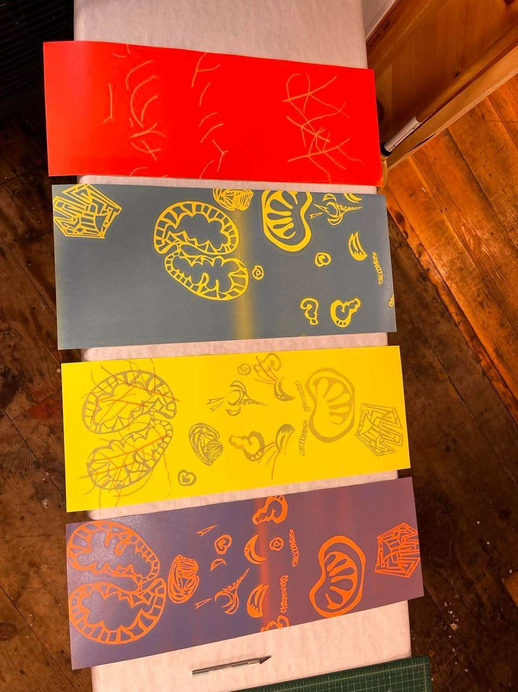
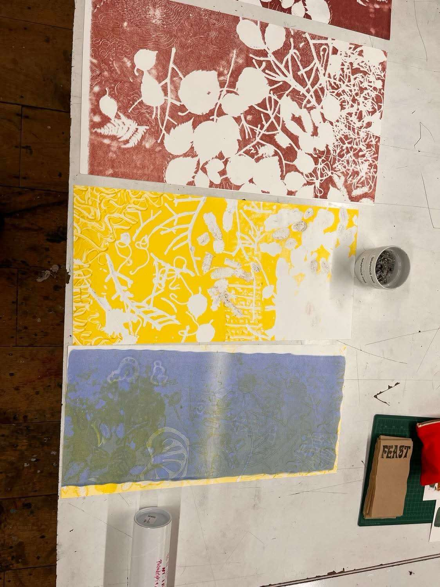
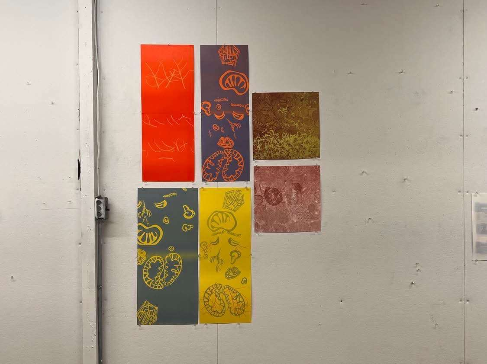
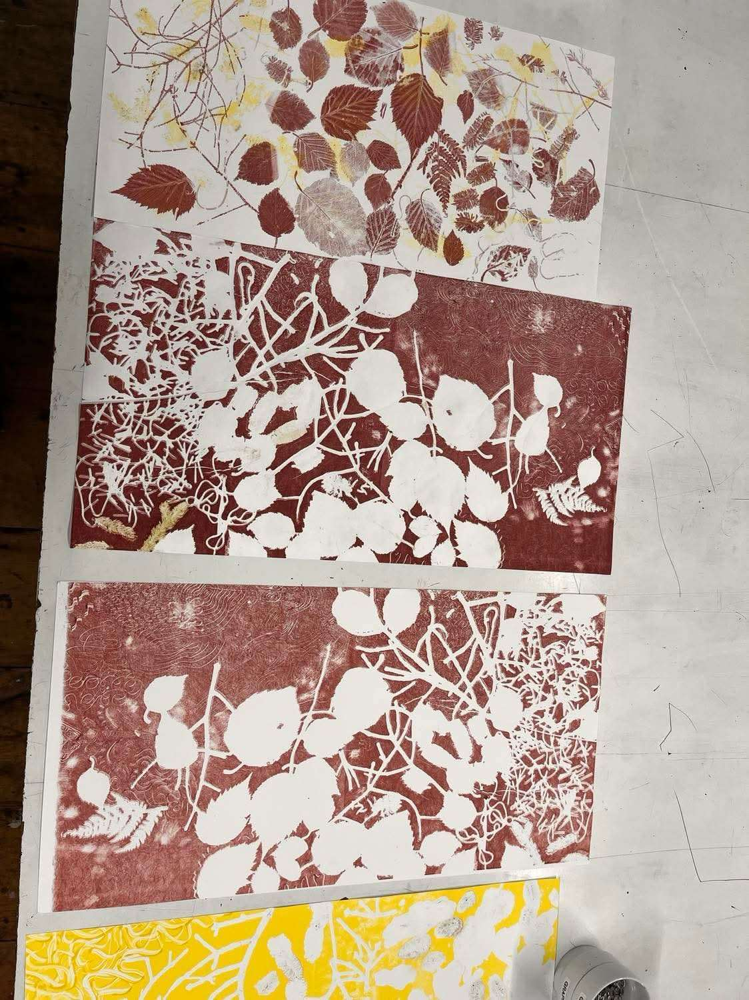
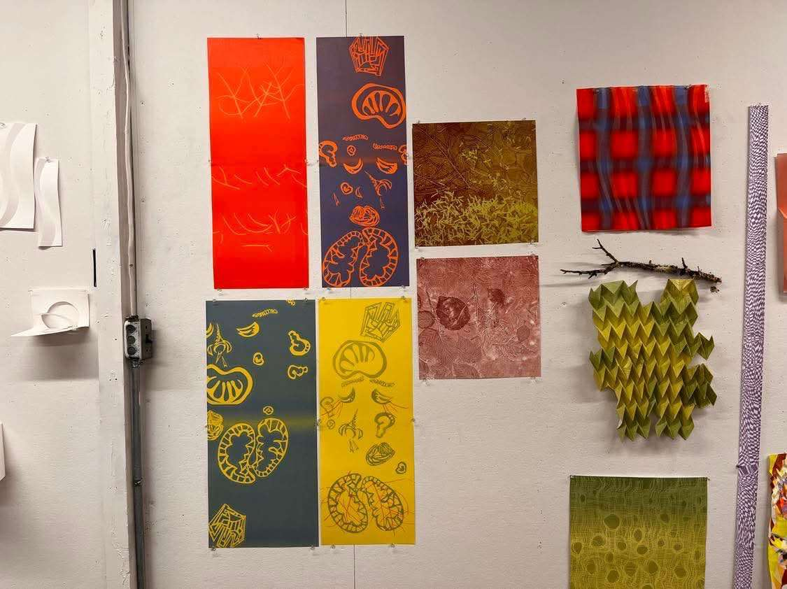
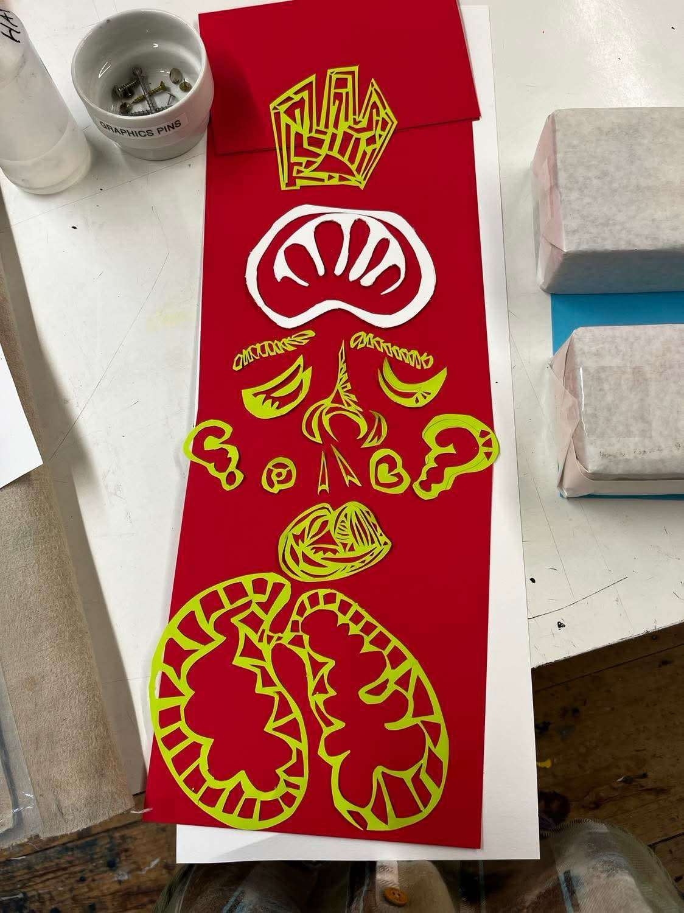
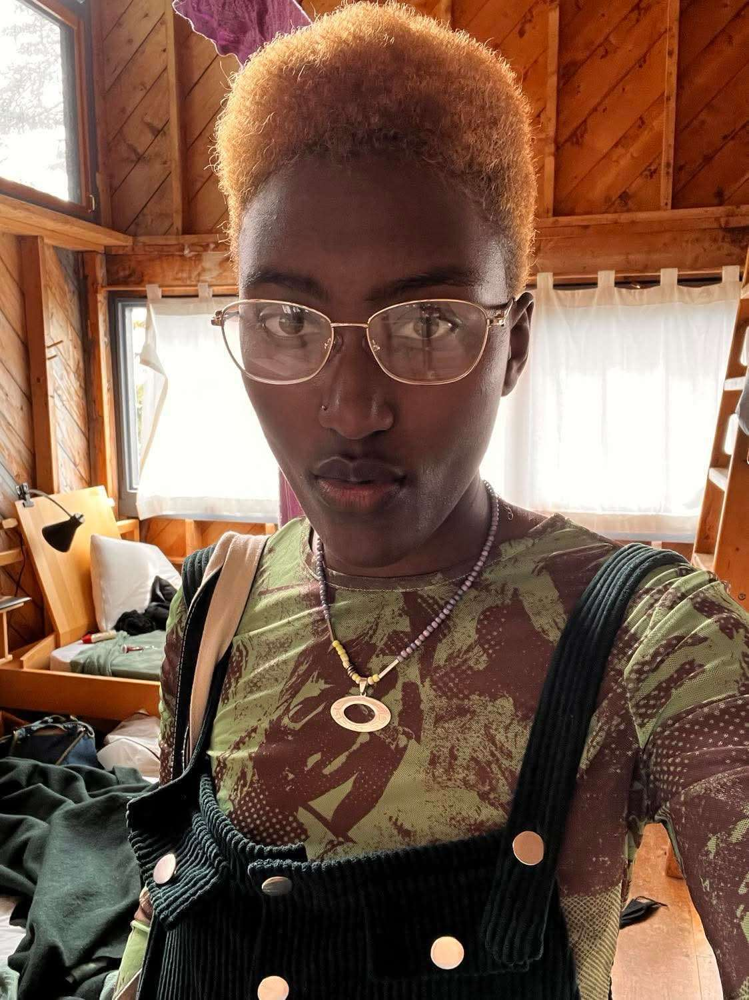
Notion sync mounted
[latest / May 17 2026]
Site setup notes for this domain, including the GitHub Actions secrets needed for automated Notion publishing.
open pageFinger signs, Prince-stage energy, and TidalCycles chord control.
open pageNew media art foundations and MediaPipe references.
open pageBio link stack